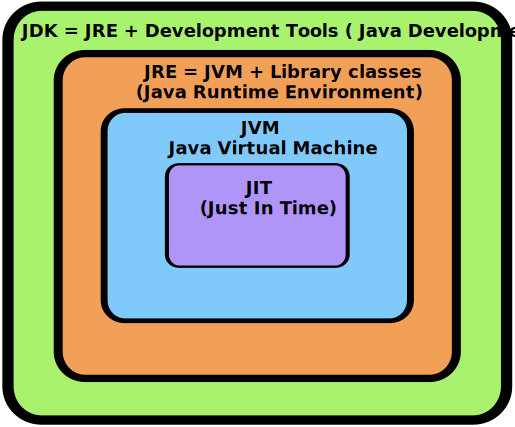
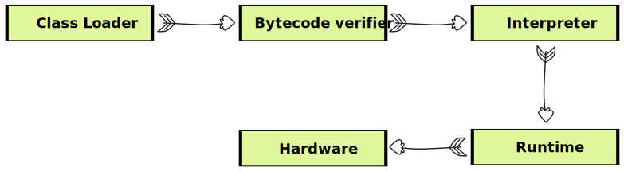
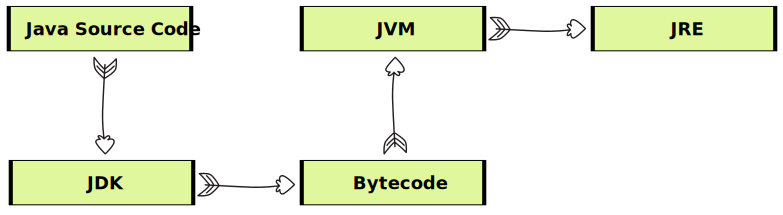

Introduction to Java - Architecture & installation - Architecture
- Q → Why do we use programming language?
- A → Machine only understand 0's and 1's, for humans it is very difficult to instruct computer in 0's and 1's so to avoid this issue we write our code in human readable language (programming language). "Java is one of the programming language".
How Java Executes ?

- The code written in java is human readable and it is saved using extension .java
- This code is known as source code
- Java Compiler
- Java compiler converts the source code into byte code which have the extension .class
- This byte code does not directly run on system
- We need JVM (Java Virtual Machine) to run this
- Reason why java is platform independent
- Java Interpreter
- Converts byte code to machine code i.e. 0's and 1's
- It translate the byte code line by line to machine code
More about platform independent
- It means that byte code can run on all operating system
- We need to convert source code to machine code so computer can understand it.
- Compiler helps in doing this by turning it into executable code.
- This executable code is a set of instruction's for the computer
- After compiling C/C++ code we get .ese file which is platform dependent.
- In java we get byte code. JVM converts this to machine code.
- Java is platform independent but JVM is platform dependent.
Architecture of java
JDK
- Provide environment to develop and run the java program.
- It is a package that includes :-
- Development tools to provide an environment to run your program.
- IRE :- to execute your program
- A compiler javac
- Docs generator javadoc
- Interpreter/loader
JRE
- It is an installation package that provide environment to only run the program.
- It consist of :-
- Deployment technology
- User interface toolkit
- Intergration libraries
- Base libraries
- JVM :- Java Virtal Machine
Compiler Time
- After we get the .class file the next thing happen at runtime :
- Class loader loads all classes needed to execute the program
- JVM sends code to bytecode berifies to check the format of code.
Runtime :-
- (How JVM works) class loader
- Loading
- Read .class file and generate binary data.
- an object of this class is created in heap.
- Linking
- JVM verifies the .class file
- allocates memory for the class variables and default value
- replace symbolic references from the type with direct reference.
- Initialization
- All static variables are assigned with their values defined in the code and static back.
- JVM contains the stack and heap memory locations.
- Loading
JVM Execution
- Interpreter
- Line by execution
- When one method is called many times it will interpret again and again
- JIT
- Those methods that are repeated. JIT provides direct machine code so that interpretation is not required.
- Makes execution faster
- Garbage collector
Working of Java Architecture
Tools required to run java
- JDK
- IDE
First Java Program
Structure of java file
"Source code that we write will be saved using extension .java"
- Everything written in .java file must be in classes or we can say that every file having .java externsion is a class.
- A class with same name as file name ust be present in .java file.
- Class which is having same name as file must be public class.
- A main function/method must be present in this public class, main is a function from where the program starts.
Converting .java to .class
- Using javac compiler we can convert .java file to class commant to convert .java to .class
- Let the name of .java file is Main. So the command to convert .java to .class is javac Main.java
Running the program
- By using java and name of file we can run the program
- command → java Main
javac Main.java
java Main
Hello world program
public class Test{
public static void main(String[] args){
System.out.println("Hello World");
}
}
- public (first line) → public is an access modifier which allows to access the class from anywhere
- class → It is a name group of properties and functions
- Test → It is just the name of class as same as the name of file.
- public (second line) → It is used to allow the program to use main fruntion from anywhere
- static → It is a keyword which helps the main method to run without using objects.
- void → It is a keyword used when we don not want to return anything from a method/function
- main → It is the name of method.
- String [] args → It is a command line argument of string type array.
- System → It is a final class defined in java.lang package.
- out → It is a variable of PrintStream type which is public and static member field of the System class
- println → It is a method of PrintStream class, it prints the arguments passed to it and adds a new line. print can also be used here but it prints only arguments passed to it, it do not adds a new line.
What is package?
- It is just a folder in which java files lies.
- It is used to provide some rules and stuff to our programs.
Primitive data types
- Primitive data types are thoses data types which are not breakable
- Ex → String is not a primitive data type as we can break this data type into char.
- i.e. String "Kunal" can be divided into → 'K' 'u' 'n' 'a' 'l'
- but primitives data type are not breakable
- we cannot break a char, int etc.
List of primitive data types in java are :-
Data types
Description
Example
int
stores numeric digit
int i = 26;
char
stores characters
char c = 'A';
float
stores floating point numbers
float f = 98.67f;
double
stores larger decimal numbers
double d = 45676.58975;
long
stores numeric digit which is not able to stored in int
long l = 12234354354365l;
boolean
It only stores true and false
boolean b = false;
In float and long we have used f an dl. it denotes that the number in the variable is float or long type. If we don not use this java consider float value as double and long value as int.
-
Literals → It is synthtic representation of boolean, character, string, and
numeric data.
- Ex :- int a = 10
here 10 is called literal
- Ex :- int a = 10
-
Identifiers → name of variable, methods, class, packages, etc. are known as
identifiers.
- Ex:- int a = 10;
Here a is identifier.
- Ex:- int a = 10;
Comments in java
Comments are something which is written in source code but ignored by the compiler.
- Two type of comment
- Single line comment :- used to comment down a single line (// is used for it.)
- Multi line coment :- used to comment down multiple lines (/* */ is used for it.)
// This is a single line comment
/* This is a
Multi line comment
*/
Inputs in java
We have Scanner class available in java.util package to take input
- To use this class we have to
- Import java.util package in our file
- Create object of the scanner class
- Use that object to take input from the keyborad.
//syntax
import java.util.Scanner;
public class Main{
public static void main(String [] args){
Scanner input = new Scanner(System.in);
}
}
- Scanner → It is a class required to take input, it is present in java.util package.
- input → It is an object that we are creating to take input.
- new → It is a keyword used to create an object in java.
- System.in → System is a class and in is a variable that denotes we are taking input from standard input stream (i.e. keyboard)
int input → nextInt() is a function used to take input of int.
Scanner input = new Scanner(System.in);
int rollno = input.nextInt();
float input → nextFloat() is a function used to take input of float.
Scanner input = new Scanner(System.in);
float marks = input.nextFLoat();
string input →
Two ways to take string input
// 1. using next() methods - It will take one word input till a space occurs
Scanner input = new Scanner(System.in);
String s1 = input.next();
// 2. using nextLine() methods - It will take all string input including spaces.
Scanner input = new Scanner(System.in);
String s2 = input.nextLine();
Output in Java
- In Java, you can print numbers and strings to the console using various methods provided by the System.out object, which is an instance of the PrintStream class. Here are a few common methods along with examples ↓
1: Using System.out.print(): This method prints the given content without moving to the next line.
int number = 42;
System.out.print("The answer is: ");
System.out.print(number);
Output ↓
The answer is: 42
2: Using System.out.println(): This method prints the given content and moves to the next line after printing.
String message = "Hello, World!";
System.out.println(message);
System.out.println("This is a new line.");
Output ↓
Hello, World!
This is a new line.
3: Using System.out.printf(): This method allows you to format and print text with placeholders for variables.
String name = "Alice";
int age = 30;
System.out.printf("My name is %s and I am %d years old.", name, age);
Output ↓
My name is Alice and I am 30 years old.
4: Using Concatenation: You can use the + operator to concatenate strings and variables for printing.
double price = 19.99;
System.out.println("The item costs $" + price);
Output ↓
The item costs $19.99
Program for sum of two numbers
import java.util.Scanner;
public class Sum {
public static void main(String[] args) {
Scanner input = new Scanner(System.in);
System.out.print("Enter first no. ");
int num1 = input.nextInt();
System.out.print("Enter second no. ");
int num2 = input.nextInt();
int sum = num1+num2;
System.out.println("The sum is ="+ sum);
}
}
- Good practise ↓
- To separate functionality into different classes. This approach is known as Object-Oriented Programming (OOP) and it promotes modular and organized code by breaking down different responsibilities into separate classes. The class with the main method serves as the entry point of your program, and other classes contain the functions, variables, and methods that perform specific tasks.

Type Conversion
When one type of data is addigned to another type of variable an automatic type conversion will take place under some condition
- Conditions :-
- Two types should be compatible
- Destination type should be greater then the source type.
Type Casting
When we convert one type of data to another type is known as type casting.
Ex :- int num = (int) (67.3455f)
Automatic type promotion in expressions
While evaluating expressions the intermediate value may exceed the operands and hence the expression value will be promoted.
There are some condition for type promotion :-
- Java automatically promotes each byte, short or char operand to when evaluating an expression.
- If one operand is a long, float or double the whole expression is promoted to long, float or double respectively.
byte a = 40;
byte b = 50;
byte c = 100;
int d = (a*c)/c;
System.out.println(d);
Here when a*b occurred it became 2000 which is out of the range of byte (as byte max can be 256). So, here byte is automatically promoted to int type.
Example for thorough review concept.
public class TypePromotion {
public static void main(String[] args) {
byte b =42;
byte c = 'a';
short s = 1024;
int i = 50000;
float f = 5.67f;
double d = 0.1234;
double result = (f*b)+(i/c)+(d*s);
System.out.println((f*b)+" "+(i/c)+" "+(d*s));
System.out.println(result);
}
}
Explicit type casting
If we want to store large value into small data type
Ex : byte b = 50;
b = (byte) (b*2); // type casting int to byte.